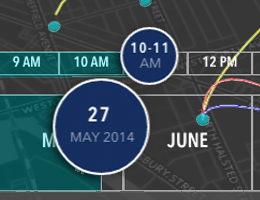
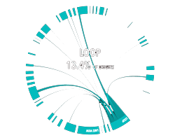
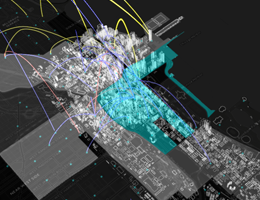

Welcome to Divvy.Vision
Divvy.Vision is an open-source viewer of 2014 origin and destination trips of Chicago's Divvy bike share program,
and an entry for the Divvy Data Challenge 2015.
Click outside this infobox to explore. Major features of the visualization are outlined in this video demo and below:
|  |  |  |
| Find 2014 daily & hourly origin-destination trip data with the sliders. Taller curves = longer trips. | View daily frequency of trips between two neighborhoods with the chord diagram to the right. | Highlight neighborhoods to see flow from a selected neighborhood. Brightness = more trips. |
This visualization uses a dockerized Cassandra database for storage and querying,Cesium for 3D GIS mapping, CartoDB Positron for basemap tiling, d3 for chord diagrams, jsTween for sliders, Nodejs for serving of content, and Turf for server-side GIS operations.
Try out the visualization yourself or learn more about Divvy.Vision at the github repository here.
CameraInfo: